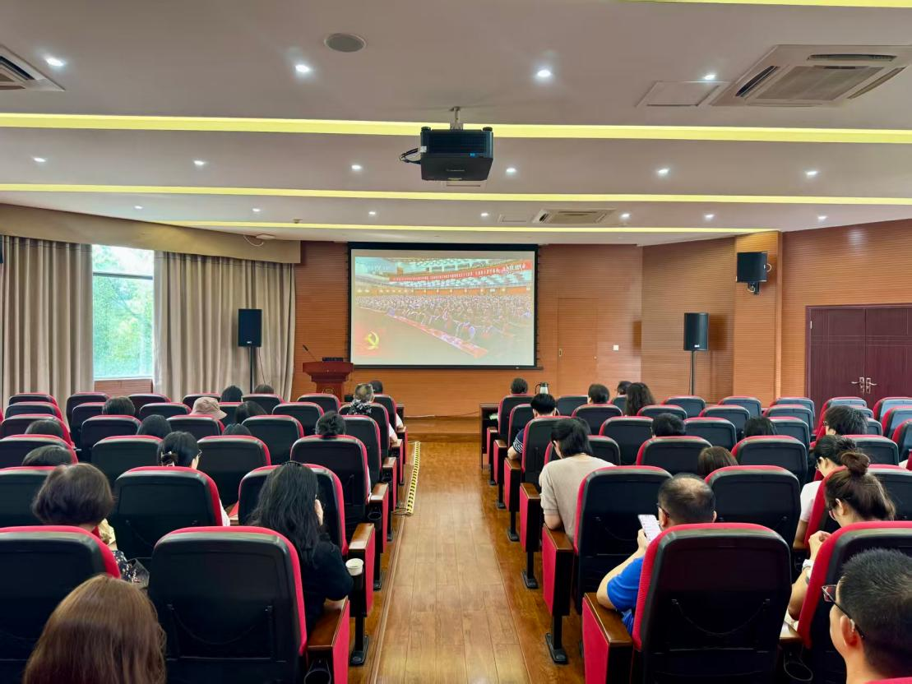

学院通知 · 科研创新
图书馆组织集中收看庆祝中国共产党成立105周年大会
发布时间：2026-07-01 14:31:21
7月1日上午，庆祝中国共产党成立105周年大会在北京人民大会堂隆重举行。中共中央总书记、国家主席、中央军委主席习近平向 “ 七一勋章 ” 获得者颁授勋章并发表重要讲话。图书馆以分馆为单位，组织党员干部 和 全体 馆员在工学图书馆五楼报告厅、医学图书馆花雨厅、江安图书馆明远文库等集中收看大会直播。 大会结束后，图书馆组织党员干部和馆员结合学习、工作实际交流 研讨，谈收获 体会。大家一致认为，习近平总书记重要讲话全面回顾总结105年来中国共产党团结带领全国各族人民走过的光辉历程、创造的伟大成就，深刻揭示中国共产党之所以能够不断铸就辉煌的优秀特质，对新征程上全体中国共产党人坚定信心、接续奋斗提出明确要求，为做好新时代图书馆工作提供了思想指引和行动遵循。大家表示，将深入学习贯彻习近平总书记重要讲话精神，深学细悟、笃行实干，以 “ 功崇惟志，业广惟勤 ” 的奋斗姿态，紧扣学校 立德树人和 “ 双一流 ” 建设大局，坚持党建引领事业高质量发展，在智慧图书馆建设、古籍保护与活化、知识产权信息服务、阅读推广等工作中持续用力，为以中国式现代化全面推进强国建设、民族复兴伟业贡献图书馆力量。 深学细悟，在回望奋斗历程中筑牢信仰之基 习近平总书记指出，105年来，我们党始终坚守为中国人民谋幸福、为中华民族谋复兴的初心使命，团结带领全国各族人民不懈奋斗，创造了新民主主义革命、社会主义革命和建设、改革开放和社会主义现代化建设、新时代中国特色社会主义的伟大成就，书写了中华民族几千年历史上最恢宏的史诗。党员干部表示，习近平总书记重要讲话系统总结党的伟大成就，深刻阐明党的优秀特质，使大家进一步深化了对党的创新理论真理力量和实践伟力的认识，更加坚定了做好图书馆服务育人、文化育人工作的责任感。大家认为，图书馆整理的每一册图书、修复的每一份文献、回应的每一次咨询，都是服务师生、守护文化、传承精神的重要实践；要把学习成果转化为履职尽责的实际行动，在平凡岗位上践行初心使命。 守正创新，在传承中华文脉中坚定文化自信 习近平总书记在讲话中强调，坚持把马克思主义基本原理同中国具体实际相结合、同中华优秀传统文化相结合，不断推进马克思主义中国化时代化；新征程上要坚定道路自信、理论自信、制度自信、文化自信，继往开来、守正创新。古籍特藏中心的老师们表示，总书记的重要论述使大家更加深切认识到，古籍特藏库房不仅是文献保存空间，更承载着民族记忆与文化智慧。每一册历经沧桑的善本、碑帖，不只是纸张与墨迹的聚合，更是中华优秀传统文化的重要载体。古籍保护与修复工作，是赓续中华文脉的重要基础性工作。一方面，要秉承 “ 修旧如旧 ” 的匠心，在清洗、配纸、托裱、补破等工序中敬畏历史、延续技艺；另一方面，要积极运用现代科技手段，让传统技艺在传承中不断精进。更重要的是，要通过数字化建设、专题展览、沉浸式阅读推广和面向师生的体验活动，将深藏典籍转化为滋养心灵的文化资源，让中华文明在新时代焕发新的生机。 研究发展中心 的老师们表示，将以习近平总书记重要讲话精神为指引，持续推进 “ 通识+专业 ” 经典阅读推广体系建设，深化 “ 阅读+ ” 与写作能力提升行动，积极发挥 四川省普通高等学校图书情报工作指导委员会 主任委员单位和CALIS、CASHL、CADAL西南中心的区域引领作用，以文化人、以书育人，将学习成果转化为服务育人、文化育人的实际行动。 党建引领，在融合发展中彰显服务育人实效 党员干部围绕习近平总书记重要讲话精神，结合图书馆高质量发展和服务学校 “ 双一流 ” 建设实际交流体会。大家谈到， 由我校图书馆承办的 全国 “ 双一流 ” 高校图书馆党建研讨会在望江校区文理图书馆举行，会议主题是“党建引领·深度融合：人工智能时代高校图书馆高质量发展的创新路径”。党建工作不是抽象口号，必须体现在推动事业发展、服务师生成长、提升治理效能的具体实践中。从优化借阅流程到提升数字资源服务水平，从改善阅读环境到探索人工智能技术在知识服务中的应用，党员的先锋模范作用体现在日常工作的一线岗位和关键环节。信息技术中心、文献服务中心等部门的老师们表示，面对人工智能等新技术带来的深刻变革，将主动学习、勇于创新，以过硬作风和专业能力推动图书馆服务提质增效。基层一线馆员 也 谈到，近年来 我校 图书馆打造 “ 学习书屋 ” 等红色文化教育空间，深入挖掘具有川大特色的红色文化资源，引导师生在阅读中坚定理想信念、厚植家国情怀。大家表示，图书馆不仅要管理和保障文献资源，更要用书香浸润初心、用文脉涵育担当。 专业赋能，在服务国家战略中体现使命担当 习近平总书记号召全党同志坚定信心、接续奋斗，不断创造无愧于时代和人民的新业绩。 工学馆党支部 党员 们 表示，总书记的重要讲话令人深受教育、倍感振奋。 大家表示 深感责任重大、使命光荣。近年来， 知识服务中心的党员同志们 积极参与知识产权信息服务中心建设，连续六届组织开展知识产权挑战赛，覆盖大中学生群体，以赛事为载体激发青年学子的创新意识和知识产权保护意识；参与成渝联盟年会，推动区域知识产权服务协同发展；参与 “ 智海引航 ” 项目建设，该项目入选2023年度第二批全国优秀案例，成为四川省唯一入选高校项目。 大家 表示，高校图书馆党员不仅要做文献的 “ 守门人 ” ，更要做创新的 “ 助推器 ” 。在专利导航服务中，要聚焦关键核心技术领域，开展技术演进路径梳理与专利引用分析，为学校科研团队提供数据支撑和决策参考；在学科分析服务中，要运用文献计量工具，为学校 “ 双一流 ” 建设提供精准支持。下一步，将继续深耕知识产权服务与学科分析领域，深化专利导航报告的实战应用，拓展知识产权赛事辐射面，以专业力量服务高水平科技自立自强。 接续奋斗，在新征程上跑好历史接力赛 习近平总书记在讲话中深切缅怀老一辈革命家和革命先烈。全体收看人员表示，要铭记党的光辉历史，传承红色基因，赓续精神血脉。大家对总书记关于 “ 中国共产党105年的辉煌历史令人自豪，但我们决不能骄傲自满、止步不前。到本世纪中叶，我们要全面建成社会主义现代化强国、实现第二个百年奋斗目标。时间不等人！历史不等人！ ” 的重要论述深受触动，对 “ 务必不忘初心、牢记使命，务必谦虚谨慎、艰苦奋斗，务必敢于斗争、善于斗争 ” 的重要要求有了更深认识。大家表示，唯有接续奋斗，才能不负历史和人民的重托。习近平总书记指出，青年是实现中华民族伟大复兴的生力军，新时代中国青年要坚定不移听党话、跟党走，树立远大志向，勇担时代重任，把个人追求融入党和国家事业，在新征程上跑好历史接力赛。图书馆青年馆员表示， “ 七一勋章 ” 获得者用数十年如一日的坚守与奉献
